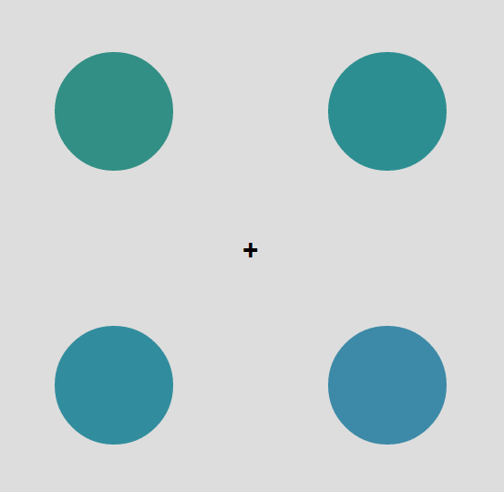

In this HIT, you will have to perform a change detection task involving colored circles. It should take about 15-20 minutes total.
Every trial you will see several circles, like this:

Notice how the color of the circles are all slightly different. These circles will be shown briefly, and then disappear, and then be shown again. You will be asked to report whether any circle changed color. To do so, you'll use the arrow keys (up left right) to select which color changed color. Alternatively, if no color changed, press the down arrow key.
You will then indicate how confident you are in your response by using the number keys. Please respond on a scale of 1 (uncertain) to 5 (certain).
The amount of time the colors stay displayed after they have reappeared is variable, meaning that on some trials the color will only reappear for a brief moment. The task is always the same no matter how long the circles appear on the screen.
To start off with, we'll give you 30 practice trials. During the practice trials, you'll get feedback on how far off you are.

Consent to Participate in Research:
By answering the following questions, you are participating in a study being performed by cognitive scientists in the Harvard University Psychology Department. The purpose of this research is to examine human visual performance.
By participating you are confirming that you are over 18 years of age and have normal or corrected-to-normal vision.
If you have questions about this research, or if you would like to receive a report of this research when it is completed please contact Timothy Brady at tbrady@wjh.harvard.edu.
Your participation in this research is completely voluntary. If you choose to participate, you may change your mind and leave the study at any time. Refusal to participate or stopping your participation will involve no penalty or loss of benefits to which you are otherwise entitled.
You may decline to answer any or all of the following questions. Your anonymity is assured; the researchers who have requested your participation will not receive any personal information about you.
For questions, concerns, or complaints that are not being addressed by the researcher, or research-related harm contact: Committee on the Use of Human Subjects in Research at Harvard University, 1414 Massachusetts Avenue, Second Floor, Cambridge, MA 02138. Phone: 617-496-CUHS (2847). Email: cuhs@fas.harvard.edu
By continuing, you are confirming that you understand these instructions and conditions of participation.